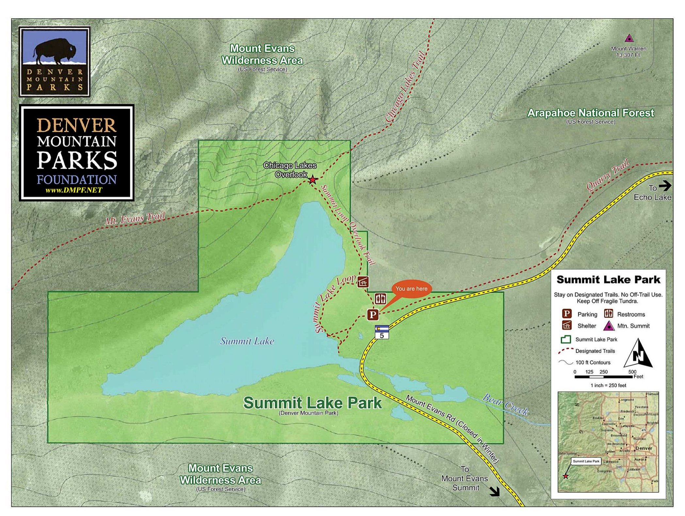

Park Map
The map below shows the boundaries of Summit Lake Park, its trail network, facilities, and its relationship to the surrounding Mount Evans Wilderness Area and Arapahoe National Forest. Key features include the Summit Lake Loop trail, the Chicago Lakes Overlook, and the Bear Creek outlet — the park's primary hydrological contribution to the downstream watershed.

Guiding Principles
Our conservation plan is built on five foundational principles that should guide all decision-making at Summit Lake Park:
Science-Based
All management decisions grounded in peer-reviewed research and ongoing monitoring data.
Ecosystem-First
Ecological integrity is the primary management objective; recreation is accommodated within ecological limits.
Adaptive
Management responds to new information and changing conditions, especially as climate impacts intensify.
Collaborative
Engages Denver Mountain Parks, USFS, CSU, CPW, and the public as equal partners.
Educational
Transforms every visitor interaction into an opportunity to build conservation awareness and stewardship values.
The Five Pillars
Habitat Protection & Restoration
Designate and enforce a Core Protection Zone within 150 meters of the lake shore where off-trail travel is prohibited. Install low-profile, naturalistic fencing using local materials to redirect visitor movement while minimizing visual impact. Actively restore the most impacted areas using native seed mixes propagated from on-site collections — targeting a minimum of 2 acres of active restoration per year for the first five years. Implement an invasive species early detection and rapid response protocol, including twice-annual surveys and targeted removal.
Visitor Management
Implement a permanent timed-entry reservation system for the Mount Evans Scenic Byway during peak season (June 15–September 15), with a daily visitor cap determined by ecological carrying-capacity research. Redesign the Summit Lake parking area to reduce its footprint and incorporate bioswales and permeable surfaces to reduce runoff into the lake. Establish a Trail Ambassador Program modeled on RMNP's successful volunteer docent program, with trained ambassadors stationed at key impact points to provide visitor education and redirect off-trail walkers. Create a designated accessible viewing platform at the lake shore to give all visitors a meaningful, low-impact experience.
Long-Term Ecological Monitoring
Establish a permanent ecological monitoring program with annual surveys of: (1) vegetation community composition and cover in 20 permanent plots distributed across habitat types; (2) pika population indices using standardized call-count surveys; (3) white-tailed ptarmigan nesting success; (4) western toad breeding phenology and egg mass counts; (5) lake water quality parameters including pH, turbidity, nutrient levels, and temperature. Partner with CSU and CU-Boulder to involve graduate students in monitoring activities, ensuring scientific rigor while building the next generation of alpine ecologists. Publish annual monitoring reports publicly and use data to inform adaptive management decisions.
Water Quality Improvement
Commission an independent baseline water quality assessment of Summit Lake within the first year of plan implementation. Redesign parking area drainage to route all surface runoff through vegetated bioswales before it can reach the lake. Establish a 30-meter no-disturbance riparian buffer around the lake shore where vegetation is actively managed for maximum water filtration function. Coordinate with Denver Mountain Parks road maintenance program to phase out road salting near the Byway's highest elevations and transition to sand-only winter traction management.
Education & Community Engagement
Develop a new interpretive center at the Summit Lake trailhead — a small, architecturally sensitive facility that introduces visitors to the ecology, natural history, and conservation needs of the alpine tundra. Create multilingual interpretive materials and a mobile-compatible digital guide accessible by QR code at key sites. Launch an annual Summit Lake Stewardship Day — a community event combining restoration volunteer work with educational programming and scientific demonstration. Develop a curriculum-linked field trip program for Front Range K–12 schools, using Summit Lake as an outdoor classroom for climate science and ecology.
Implementation Timeline
Foundation
Complete baseline ecological and water quality assessments. Establish permanent monitoring plots. Begin invasive species removal in priority areas. Launch timed-entry reservation pilot. Form inter-agency coordination committee.
Infrastructure
Install Core Protection Zone fencing. Begin active revegetation in highest-impact areas. Redesign parking area drainage. Launch Trail Ambassador volunteer program. Begin interpretive center design process.
Expansion
Open interpretive center. Formalize permanent timed-entry system. Scale up revegetation program. Publish first five-year monitoring report and adaptive management review. Launch school field trip program.
Long-Term Stewardship
Conduct comprehensive five-year management plan review using monitoring data. Adjust management strategies based on ecological outcomes and evolving climate projections. Continue community engagement and scientific partnership programs.
Funding Strategy
Successful implementation will require a diversified funding approach drawing on multiple sources:
- Recreation Fee Revenue: Timed-entry reservation fees can generate meaningful revenue dedicated to on-site conservation and restoration.
- Federal Grants: USFS collaborative forest landscape restoration program grants, EPA watershed protection grants, and USFWS species recovery grants are all applicable to aspects of this plan.
- Colorado Parks and Wildlife: CPW's State Wildlife Grants program (funded by hunting and fishing licenses) supports non-game species conservation including pika and ptarmigan monitoring.
- Private Philanthropy: The Denver conservation philanthropic community has historically supported Denver Mountain Parks. A targeted fundraising campaign focused on Summit Lake's unique status could attract significant donor interest.
- University Partnerships: CSU and CU-Boulder can contribute graduate student labor, equipment, and overhead support for monitoring programs, reducing direct costs.
Summit Lake Park is a treasure that belongs to all Coloradans — and to the wild community of plants and animals that call it home. This proposal represents a commitment to meeting our obligations as stewards of a place that cannot speak for itself. The time to act is now, while restoration is still possible and the ecosystem retains its resilience.
Measuring Success
We propose the following measurable goals to evaluate the plan's success at the 5-year mark:
- Native plant cover in restoration areas increases by ≥30% from baseline
- Pika detections remain stable or increase compared to baseline survey
- Western toad egg mass counts stabilize after documented decline
- Lake water turbidity and nutrient levels return to pre-disturbance reference conditions
- Invasive species coverage in Core Protection Zone reduced by ≥50%
- Off-trail visitor impact incidents (measured by trail cameras and ranger observations) reduced by ≥60%
- Annual visitor satisfaction surveys show ≥85% positive response to conservation messaging